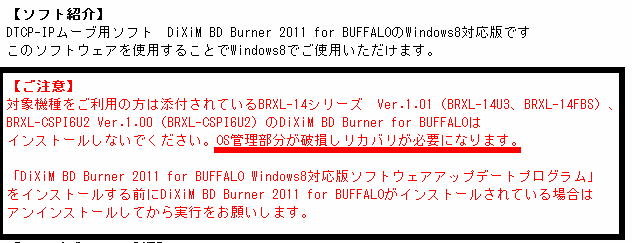

| TOP | weblog | TIPS | Works | リンク |
| 2013-01-01 正月早々縁起が悪いぜ！ 大手の製品でOSを破壊する強烈な不具合は今まで（運よく？）お目にかかりませんでしたが、正月早々やられました。 カウントダウン番組が終わって一段落したのちセットアップ作業続けたら....年明け早々縁起が悪いぜ！  はい、見事にやられました。 バカだから２回も、とほほ... ちなみに「DRIVER_OVERRAN_STACK_BUFFER」と言うエラーが出ます。 どうしても調べて何とかしようとするんだよねぇ、分かりもしないのに。 |